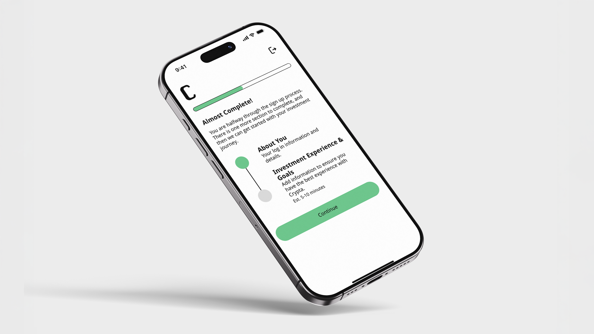
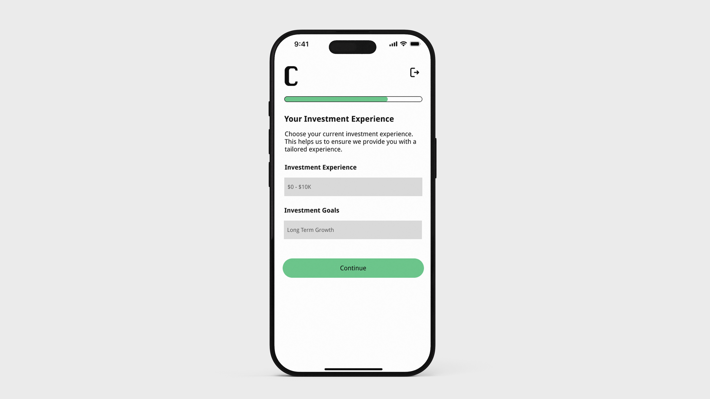
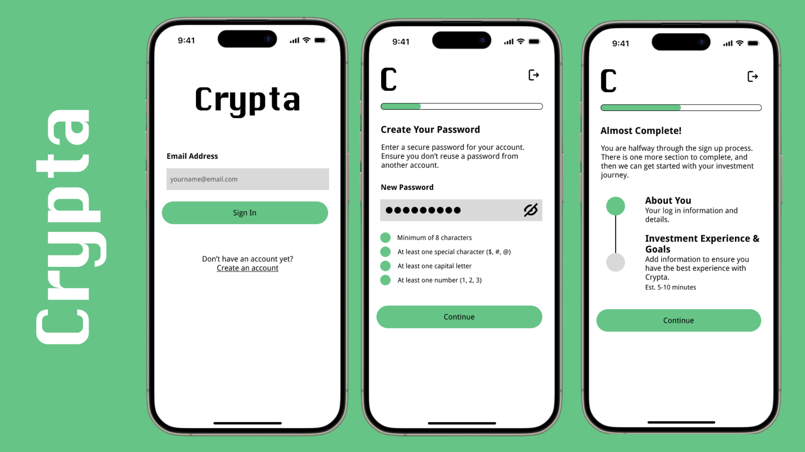
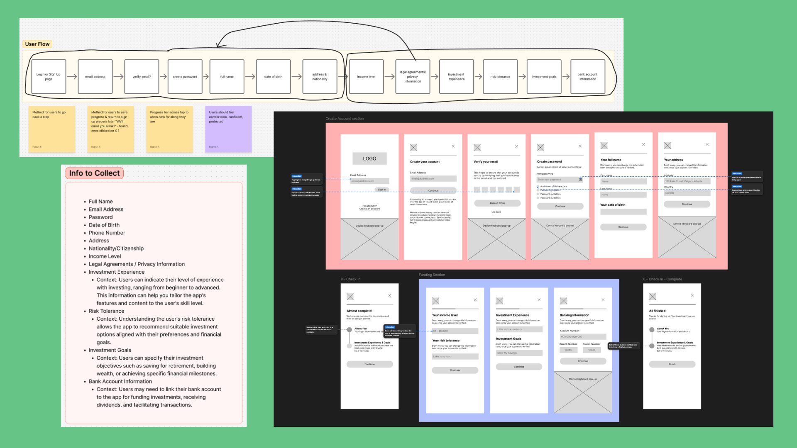
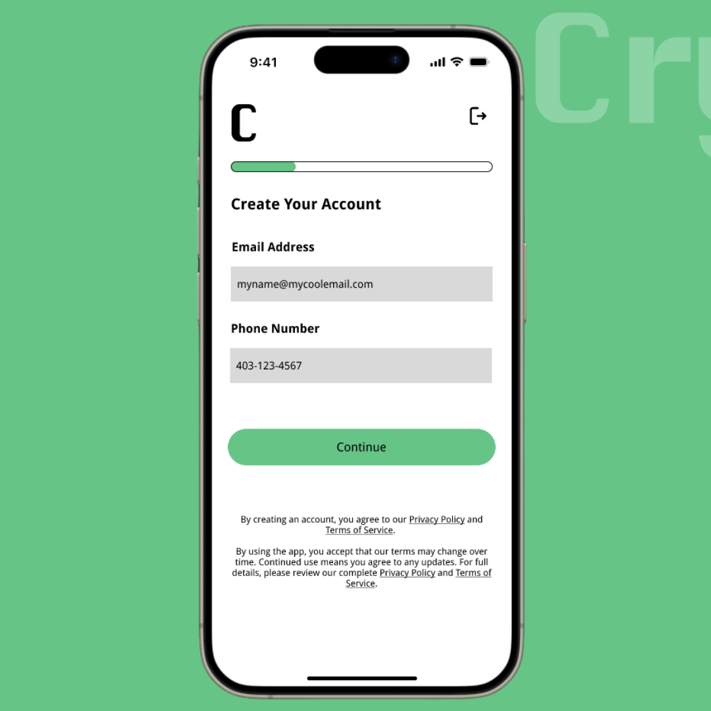
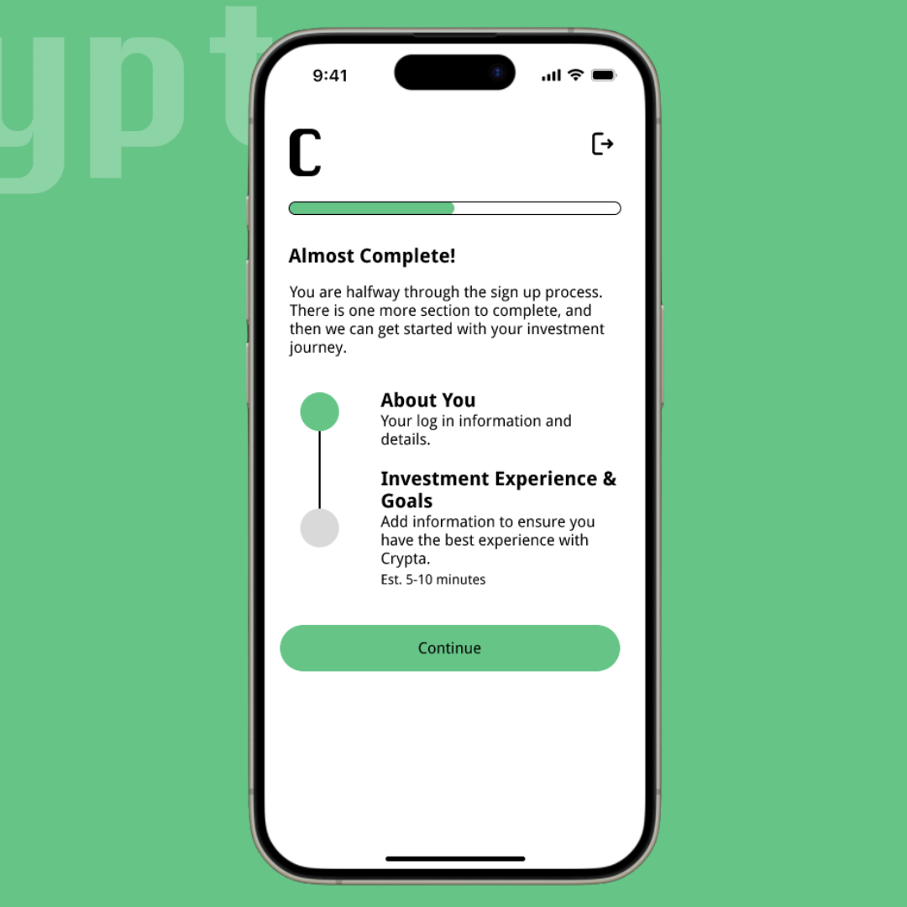
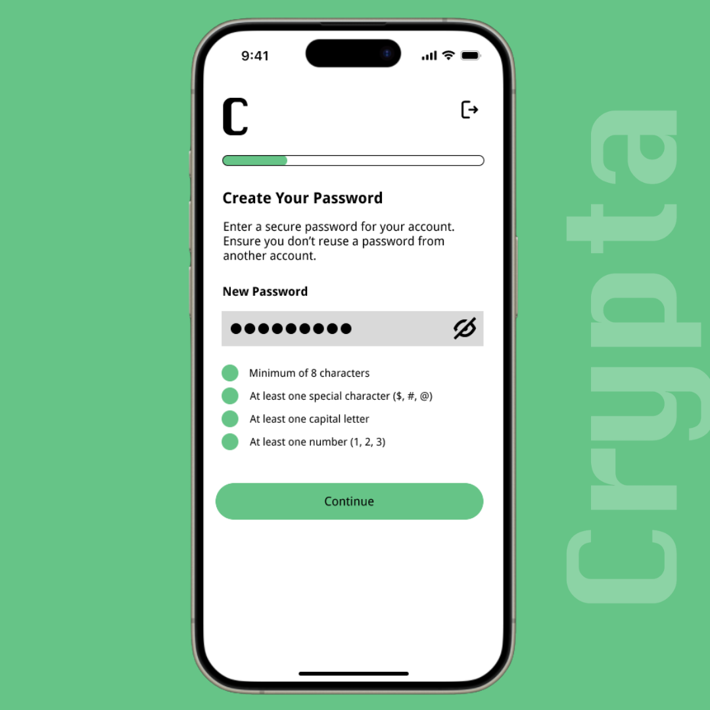
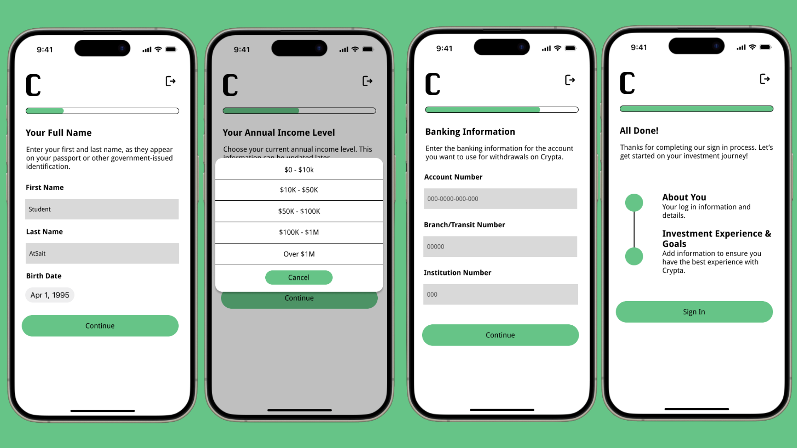

Crypta is a fictional innovative online financial technology company offering a seamless
platform for users to explore cryptocurrency investments.
My task was to design a signup process that ensures a smooth transition between each step.
Requirements included clear instructions, intuitive navigation, and flexible
options for saving user progress and returning later.


Problem: Crypta's sign up flow requires extensive financial and compliance information, creating a risk of user overwhelm and drop-off
Solution: Design a clear, step-by-step mobile sign up flow that simplifes complex information and supports confident user progression
Impact: The sign up flow reduces cognitive load and supports smooth user progression through a complex onboarding process
The project goal was to create a signup process for the fictional app which included 13 different pieces of information that needed to be collected during signup or included within the process.
My role included:

I took inspiration for the design from both Coinbase and CashApp, studying both sign up flows on Mobbin.
Design choices included:

While formal feedback wasn't part of this project until after hand-in, I made small iterations to improve usability. For example, I integrated legal agreements and privacy policy information directly into the account creation page, reducing steps for the user and keeping the flow familiar and simple.

Included legal agreements and privacy policy as part of account creation, rather than their own separate pages

Included a natural halfway point, to help users gain an understanding of where they were within the flow

Ensured users had clear direction at each step with use of microcopy and microinteractions
Better Justify Design Decisions
In future iterations, I would more thoroughly document and annotate my design decisions to clearly communicate the reasoning behind each flow and interaction. My instructor's feedback was that while the overall experience was strong, additional justification would help stakeholders better understand how each choice supports usability and user goals.
Design for Unhappy Paths
This project primarily focused on the ideal user flow, but in future iterations I would be sure to intentionally design for unhappy paths. This would include error states, loading delays, and edge cases to ensure the experience remains clear and supportive under less-than-ideal conditions.
